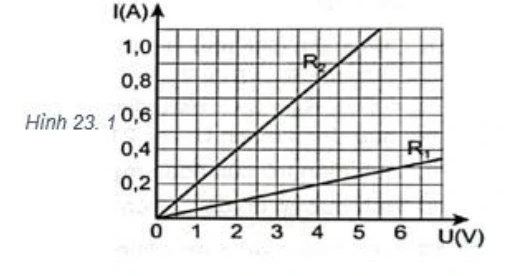
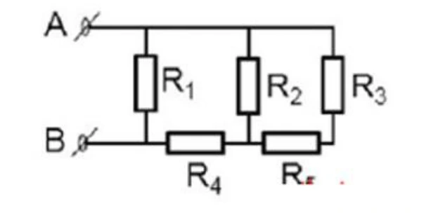
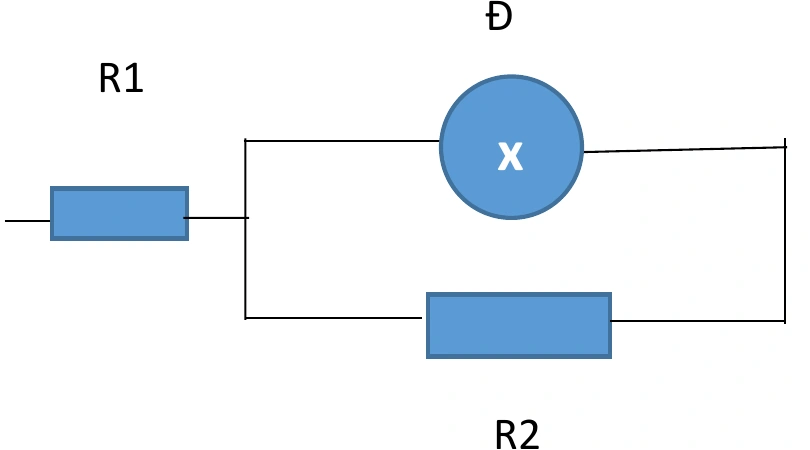
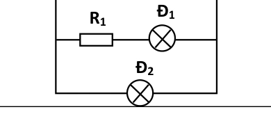
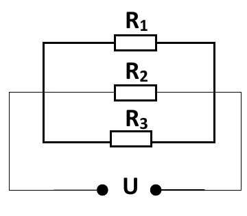

Bài tập — Bài 2 — Điện trở và định luật Ohm cho đoạn mạch
Hệ bài tập được biên soạn theo các dạng xuất hiện trong bộ tài liệu Vật lí 11 của dự án. Câu hỏi được giữ ngắn, trực tiếp; độ khó tăng dần và không cố tình thêm dữ kiện gây nhiễu.
Phần A — Trắc nghiệm 4 lựa chọn
Bài 1 — Mức 1 — Nhận biết
Điện trở dây đồng chất dài l, tiết diện S, điện trở suất ρ là
A. \(R=\rho S/l\). B. \(R=\rho l/S\). C. \(R=l/(\rho S)\). D. \(R=\rho lS\).
Đáp án và lời giải
Chọn B.
Bài 2 — Mức 1 — Nhận biết
Hai điện trở \(4\,\Omega\) và \(6\,\Omega\) mắc nối tiếp. Điện trở tương đương
A. \(2,4\,\Omega\). B. \(5\,\Omega\). C. \(10\,\Omega\). D. \(24\,\Omega\).
Đáp án và lời giải
Chọn C.
Bài 3 — Mức 1 — Nhận biết
Hai điện trở \(6\,\Omega\) và \(3\,\Omega\) mắc song song. Điện trở tương đương
A. \(2\,\Omega\). B. \(3\,\Omega\). C. \(4,5\,\Omega\). D. \(9\,\Omega\).
Đáp án và lời giải
Chọn A. \(R=6\cdot3/(6+3)=2\,\Omega\).
Bài 4 — Mức 1 — Nhận biết
Một điện trở thuần \(R=10\,\Omega\) đặt dưới hiệu điện thế \(20\) V. Dòng điện là
A. \(0,5\) A. B. \(2\) A. C. \(10\) A. D. \(200\) A.
Đáp án và lời giải
Chọn B. \(I=U/R=2\) A.
Phần B — Đúng/Sai
Bài 5 — Mức 2 — Thông hiểu
Điện trở kim loại trong mô hình phổ thông:
a) \(R=\rho l/S\). b) Tăng chiều dài dây làm R tăng. c) Tăng tiết diện dây làm R tăng. d) Với nhiều kim loại trong khoảng nhiệt độ vừa phải, R tăng gần tuyến tính theo nhiệt độ.
Đáp án và lời giải
a) Đúng. b) Đúng. c) Sai: R giảm khi S tăng. d) Đúng trong gần đúng tuyến tính.
Bài 6 — Mức 2 — Thông hiểu
Định luật Ohm cho đoạn mạch chỉ có điện trở:
a) \(I=U/R\). b) Với R không đổi, đồ thị I–U là đường thẳng qua gốc. c) Điện trở tương đương song song lớn hơn từng điện trở thành phần. d) Mạch nối tiếp có cùng dòng điện qua các phần tử.
Đáp án và lời giải
a) Đúng. b) Đúng với vật dẫn ohmic. c) Sai. d) Đúng.
Phần C — Trả lời ngắn
Bài 7 — Mức 3 — Vận dụng
Dây nicrom dài \(2\) m, tiết diện \(0,5\) mm², điện trở suất \(1,1\cdot10^{-6}\,\Omega\)m. Tính điện trở.
Đáp án và lời giải
\(S=0,5\cdot10^{-6}\) m². \(R=\rho l/S=1,1\cdot10^{-6}\cdot2/(0,5\cdot10^{-6})=4,4\,\Omega\).
Bài 8 — Mức 3 — Vận dụng
Một dây có \(R_0=20\,\Omega\) ở \(20^\circ\)C, hệ số nhiệt điện trở \(\alpha=4\cdot10^{-3}\) K⁻¹. Tính R ở \(70^\circ\)C.
Đáp án và lời giải
\(R=R_0[1+\alpha(T-T_0)]=20[1+0,004\cdot50]=24\,\Omega\).
Bài 9 — Mức 3 — Vận dụng
Ba điện trở \(2\,\Omega\), \(3\,\Omega\), \(6\,\Omega\) mắc song song. Tính điện trở tương đương.
Đáp án và lời giải
\(1/R=1/2+1/3+1/6=1\), nên \(R=1\,\Omega\).
Phần D — Vận dụng và vận dụng cao
Bài 10 — Mức 4 — Vận dụng cao
Một dây đồng chất có điện trở R. Kéo đều dây sao cho chiều dài tăng gấp đôi, thể tích coi như không đổi và điện trở suất không đổi. Tính điện trở mới theo R.
Đáp án và lời giải
Thể tích \(V=lS\) không đổi. Khi \(l'=2l\) thì \(S'=S/2\).
\(R'=\rho l'/S'=\rho(2l)/(S/2)=4\rho l/S=4R\).
Điện trở tăng 4 lần, không chỉ 2 lần, vì vừa tăng chiều dài vừa giảm tiết diện.
Ngân hàng bài tập mở rộng
Các bài dưới đây được đánh số nối tiếp phần bài tập phía trên. Đề bài được trình bày bằng Markdown; chỉ đồ thị, hình vẽ hoặc sơ đồ thực sự cần thiết mới được giữ dưới dạng hình. Đáp án và lời giải được đặt trong nút mở rộng ngay dưới từng bài.
Nhận biết — Trả lời ngắn
Bài 11
Tìm điện trở tương đương của mạch. (tính theo Ω)
Đáp án và lời giải
Đáp án: \(3{,}6\) Hướng dẫn giải:
Dùng \(R=\rho l/S\) và \(I=U/R\); với sự phụ thuộc nhiệt độ của kim loại dùng \(R=R_0[1+\alpha(t-t_0)]\).
Vậy kết quả cần tìm là \(3{,}6\).
Bài 12
Tính hiệu điện thế giữa hai đầu điện trở R1.(tính theo V)
Đáp án và lời giải
Đáp án: 8 Hướng dẫn giải:
Dùng \(R=\rho l/S\) và \(I=U/R\); với sự phụ thuộc nhiệt độ của kim loại dùng \(R=R_0[1+\alpha(t-t_0)]\).
Vậy kết quả cần tìm là 8.
Bài 13
Dây có tiết diện là bao nhiêu? Làm tròn đến phần trăm (tính theo 10-7 m2) R1 R3 R2 U
Đáp án và lời giải
Đáp án: \(1{,}96\) Hướng dẫn giải:
Dùng \(R=\rho l/S\) và \(I=U/R\); với sự phụ thuộc nhiệt độ của kim loại dùng \(R=R_0[1+\alpha(t-t_0)]\).
Vậy kết quả cần tìm là \(1{,}96\).
Bài 14
Tính đường kính tiết diện của dây nung. Làm tròn đến hàng đơn vị (tính theo 10-4 m)
Đáp án và lời giải
Đáp án: 5 Hướng dẫn giải:
Dùng \(R=\rho l/S\) và \(I=U/R\); với sự phụ thuộc nhiệt độ của kim loại dùng \(R=R_0[1+\alpha(t-t_0)]\).
Vậy kết quả cần tìm là 5.
Bài 15
Tính chiều dài của cuộn dây. Làm tròn đến hàng phần mười (tính theo m)
Đáp án và lời giải
Đáp án: \(56{,}2\) Hướng dẫn giải:
Dùng \(R=\rho l/S\) và \(I=U/R\); với sự phụ thuộc nhiệt độ của kim loại dùng \(R=R_0[1+\alpha(t-t_0)]\).
Vậy kết quả cần tìm là \(56{,}2\).
Bài 16
Tìm điện trở của cuộn dây ? Làm tròn đến hàng phần trăm (tính theo Ω)
Đáp án và lời giải
Đáp án: \(0{,}96\) Hướng dẫn giải:
Dùng \(R=\rho l/S\) và \(I=U/R\); với sự phụ thuộc nhiệt độ của kim loại dùng \(R=R_0[1+\alpha(t-t_0)]\).
Vậy kết quả cần tìm là \(0{,}96\).
Bài 17
Tính cường độ dòng điện chạy qua điện trở R3? (tính theo A)
Đáp án và lời giải
Đáp án: 3 Hướng dẫn giải:
Dùng \(R=\rho l/S\) và \(I=U/R\); với sự phụ thuộc nhiệt độ của kim loại dùng \(R=R_0[1+\alpha(t-t_0)]\).
Vậy kết quả cần tìm là 3.
Bài 18
Hiệu điện thế giữa hai đầu R1? (tính theo V)
Đáp án và lời giải
Đáp án: 2 Hướng dẫn giải:
Dùng \(R=\rho l/S\) và \(I=U/R\); với sự phụ thuộc nhiệt độ của kim loại dùng \(R=R_0[1+\alpha(t-t_0)]\).
Vậy kết quả cần tìm là 2.
Bài 19
Tính điện trở của đoạn mạch? (tính theo Ω )
Đáp án và lời giải
Đáp án: \(30\) Hướng dẫn giải:
Dùng \(R=\rho l/S\) và \(I=U/R\); với sự phụ thuộc nhiệt độ của kim loại dùng \(R=R_0[1+\alpha(t-t_0)]\).
Vậy kết quả cần tìm là \(30\).
Bài 20
Nếu hiệu điện thế đặt vào hai đầu dây dẫn đó tăng lên đến 48V thì cường độ dòng điện chạy qua nó là bao nhiêu ? ( Tính theo đon vị A)
Đáp án và lời giải
Đáp án: \(1{,}6\) Hướng dẫn giải:
Dùng \(R=\rho l/S\) và \(I=U/R\); với sự phụ thuộc nhiệt độ của kim loại dùng \(R=R_0[1+\alpha(t-t_0)]\).
Vậy kết quả cần tìm là \(1{,}6\).
Bài 21
Tính điện trở tương đương R12 (tính theo Ω )
Đáp án và lời giải
Đáp án: \(25\) Hướng dẫn giải:
Dùng \(R=\rho l/S\) và \(I=U/R\); với sự phụ thuộc nhiệt độ của kim loại dùng \(R=R_0[1+\alpha(t-t_0)]\).
Vậy kết quả cần tìm là \(25\).
Bài 22
Mắc thêm R = 15 Ω vào nối tiếp hai điện trở trên. Tính điện trở tương đương của toàn mạch. (tính theo Ω )
Đáp án và lời giải
Đáp án: \(40\) Hướng dẫn giải:
Dùng \(R=\rho l/S\) và \(I=U/R\); với sự phụ thuộc nhiệt độ của kim loại dùng \(R=R_0[1+\alpha(t-t_0)]\).
Vậy kết quả cần tìm là \(40\).
Nhận biết — Trắc nghiệm 4 lựa chọn
Bài 23
Đơn vị đo điện trở là
A. ôm (Ω).
B. fara (F).
C. henry (H).
D. oát (W).
Đáp án và lời giải
Đáp án: A Hướng dẫn giải: Đơn vị đo điện trở là ôm (Ω).
Bài 24
Phát biểu nào sau đây sai.
A. Điện trở có vạch màu là căn cứ để xác định trị số.
B. Đối với điện trở nhiệt có hệ số dương, khi nhiệt độ tăng thì điện trở tăng.
C. Đối với điện trở biến đổi theo điện áp, khi U tăng thì điện trở tăng.
D. Đối với điện trở quang, khi ánh sáng thích hợp rọi vào thì điện trở giảm.
Đáp án và lời giải
Đáp án: C Hướng dẫn giải: Đối với điện trở biến đổi theo điện áp, khi U tăng thì điện trở tăng.
Bài 25
Đặc điểm của điện trở nhiệt có hệ số nhiệt điện trở
A. dương khi nhiệt độ tăng thì điện trở tăng.
B. dương khi nhiệt độ tăng thì điện trở giảm.
C. âm khi nhiệt độ tăng thì điện trở tăng.
D. âm khi nhiệt độ tăng thì điện trở giảm về bằng 0.
Đáp án và lời giải
Đáp án: A Hướng dẫn giải:
Dùng \(R=\rho l/S\) và \(I=U/R\); với sự phụ thuộc nhiệt độ của kim loại dùng \(R=R_0[1+\alpha(t-t_0)]\).
Đặc điểm của điện trở nhiệt có hệ số nhiệt điện trở dương khi nhiệt độ tăng thì điện trở tăng. Công thức nên khi nhiệt độ tăng thì điện trở suất tăng do đó điện trở tăng.
Đối chiếu kết quả với các lựa chọn, phương án phù hợp là A. dương khi nhiệt độ tăng thì điện trở tăng.
Bài 26
Chọn biến đổi đúng trong các biến đổi sau Α. 1 Ω = 0,001 kΩ = 0,0001 ΜΩ.
Β. 10 Ω = 0,1 kΩ = 0,00001 ΜΩ.
C. 1 kΩ = 1 000 Ω = 0,01 ΜΩ.
D. 1 MΩ = 1 000 kΩ = 1 000 000 Ω.
Đáp án và lời giải
Đáp án: D Hướng dẫn giải: 1 MΩ = 1 000 kΩ = 1 000 000 Ω.
Bài 27
Biến trở là điện trở
A. có thể thay đổi trị số và dùng để điều chỉnh chiều dòng điện trong mạch.
B. có thể thay đổi trị số và dùng để điều chỉnh cường độ và chiều dòng điện trong mạch.
C. có thể thay đổi trị số và dùng để điều chỉnh cường độ dòng điện trong mạch.
D. không thay đổi trị số và dùng để điều chỉnh cường độ dòng điện trong mạch.
Đáp án và lời giải
Hướng dẫn giải: Biến trở là điện trở có thể thay đổi trị số và dùng để điều chỉnh cường độ dòng điện trong mạch.
Bài 28
Trước khi mắc biến trở vào mạch điện để điều chỉnh cường độ dòng điện thì cần điều chỉnh biến trở có giá trị nào dưới đây?
A. Có giá trị bằng 0.
B. Có giá trị nhỏ.
C. Có giá trị lớn.
D. Có giá trị lớn nhất.
Đáp án và lời giải
Đáp án: D Hướng dẫn giải: Trước khi mắc biến trở vào mạch để điều chỉnh cường độ dòng điện thì cần điều chỉnh biến trở có giá trị lớn nhất, như vậy cường độ dòng điện qua mạch sẽ nhỏ nhất. Khi chỉnh biến trở, điện trở của mạch sẽ giảm dần nên cường độ dòng điện trong mạch sẽ tăng dần → tránh hư hỏng thiết bị gắn trong mạch do việc dòng điện tăng đột ngột.
Bài 29
Trong mạch điện gia đình, tại sao dây dẫn thường được làm từ đồng hoặc nhôm?
A. Vì các vật liệu này nhẹ, dễ uốn.
B. Vì chúng có điện trở suất nhỏ, dẫn điện tốt.
C. Vì chúng có giá thành rẻ và bền.
D. Vì chúng không bị oxy hóa.
Đáp án và lời giải
Đáp án: B Hướng dẫn giải: Đồng và nhôm là những vật liệu dẫn điện tốt nhất được sử dụng phổ biến
Bài 30
Biểu thức đúng của định luật Ohm là
A. . I RU = .
B. U I R = .
C. I U R = .
D. . U I R = .
Đáp án và lời giải
Đáp án: B Hướng dẫn giải: Biểu thức đúng của định luật Ohm là U I R = .
Bài 31
Khi hiệu điện thế giữa hai đầu dây dẫn tăng thì cường độ dòng điện chạy qua dây dẫn
A. không thay đổi.
B. giảm, tỉ lệ với hiệu điện thế.
C. có lúc tăng, có lúc giảm.
D. tăng, tỉ lệ với hiệu điện thế.
Đáp án và lời giải
Đáp án: D Hướng dẫn giải: Cường độ dòng điện chạy qua dây dẫn tăng, tỉ lệ với hiệu điện thế.
Bài 32
Đồ thị biểu diễn sự phụ thuộc của cường độ dòng điện vào hiệu điện thế giữa hai đầu dây dẫn có dạng là một đường
A. thẳng đi qua gốc toạ độ.
B. cong đi qua gốc toạ độ.
C. thẳng không đi qua gốc toạ độ.
D. cong không đi qua gốc toạ độ.
Đáp án và lời giải
Đáp án: A Hướng dẫn giải: Đồ thị biểu diễn sự phụ thuộc của cường độ dòng điện vào hiệu điện thế giữa hai đầu dây dẫn có dạng là một đường thẳng đi qua gốc toạ độ.
Bài 33
Đường đặc tuyến Vôn - Ampe biểu diễn sự phụ thuộc của cường độ dòng điện qua một điện trở vào hiệu điện thế hai đầu vật dẫn là đường
A. cong hình elip.
B. thẳng.
C. hyperbol.
D. parabol.
Đáp án và lời giải
Đáp án: B Hướng dẫn giải: Đường đặc tuyến Vôn - Ampe biểu diễn sự phụ thuộc của cường độ dòng điện qua một điện trở vào hiệu điện thế hai đầu vật dẫn là đường thẳng
Bài 34
Câu nào dưới đây cho biết kim loại dẫn điện tốt?
A. Khoảng cách giữa các ion nút mạng trong kim loại rất lớn.
B. Mật độ electron tự do trong kim loại rất lớn.
C. Mật độ các ion tự do lớn.
D. Giá trị điện tích chứa trong mỗi electron tự do của kim loại lớn hơn ở các chất khác.
Đáp án và lời giải
Đáp án: B Hướng dẫn giải: Vật dẫn điện là vật có chứa nhiều điện tích tự do. Theo thuyết electron về tính dẫn điện của kim loại: mật độ hạt tải điện trong kim loại là các electron tự do rất cao nên kim loại dẫn điện rất tốt.
Bài 35
Nếu chiều dài và đường kính của một dây dẫn bằng đồng có tiết diện tròn được tăng lên gấp đôi thì điện trở của dây dẫn sẽ
A. không thay đổi.
B. tăng lên hai lần.
C. tăng lên gấp bốn lần.
D. giảm đi hai lần.
Đáp án và lời giải
Đáp án: D Hướng dẫn giải:
Dùng \(R=\rho l/S\) và \(I=U/R\); với sự phụ thuộc nhiệt độ của kim loại dùng \(R=R_0[1+\alpha(t-t_0)]\).
Do đó nếu l tăng 2, d tăng 2 thì R giảm 2
Đối chiếu kết quả với các lựa chọn, phương án phù hợp là D. giảm đi hai lần.
Bài 36
Khi mắc hai điện trở song song, điện trở tương đương của mạch
A. lớn hơn giá trị của từng điện trở.
B. nhỏ hơn giá trị của từng điện trở.
C. bằng giá trị lớn nhất trong hai điện trở.
D. bằng tổng của hai điện trở.
Đáp án và lời giải
Đáp án: B Hướng dẫn giải: Điện trở tương đương của mạch song song luôn nhỏ hơn từng điện trở riêng lẻ.
Bài 37
Nguyên nhân cơ bản gây ra điện trở của kim loại là do
A. sự va chạm của các electron tự do với các ion ở nút mạng tinh thể.
B. cấu trúc mạng tinh thể của kim loại.
C. nhiệt độ của kim loại thay đổi.
D. chuyển động nhiệt của các electron tự do trong kim loại.
Đáp án và lời giải
Đáp án: A Hướng dẫn giải: Nguyên nhân gây ra nó là sự va chạm của các electron tự do với chỗ mất trật tự của ion dương nút mạng.
Bài 38
Đại lượng đặc trưng cho mức độ cản trở dòng điện là
A. điện trở
B. hiệu điện thế
C. cường độ dòng điện
D. điện thế
Đáp án và lời giải
Đáp án: A Hướng dẫn giải: Đại lượng đặc trưng cho mức độ cản trở dòng điện của vật dẫn gọi là điện trở.
Bài 39
Phát biểu nào sau đây là đúng về định luật Ohm?
A. Cường độ dòng điện chạy qua vật dẫn kim loại tỉ lệ nghịch với hiệu điện thế ở hai đầu vật dẫn, tỉ lệ thuận điện trở của vật dẫn.
B. Cường độ dòng điện chạy qua vật dẫn kim loại tỉ lệ thuận với hiệu điện thế ở hai đầu vật dẫn, tỉ lệ nghịch điện trở của vật dẫn.
C. Cường độ dòng điện chạy qua vật dẫn kim loại tỉ lệ thuận với hiệu điện thế ở hai đầu vật dẫn và điện trở của vật dẫn.
D. Cường độ dòng điện chạy qua vật dẫn kim loại luôn không đổi.
Đáp án và lời giải
Đáp án: B Hướng dẫn giải: Định luật Ohm: Cường độ dòng điện chạy qua vật dẫn kim loại tỉ lệ thuận với hiệu điện thế ở hai đầu vật dẫn, tỉ lệ nghịch điện trở của vật dẫn.
Bài 40
Nhiệt điện trở là loại điện trở có giá trị
A. thay đổi tùy theo nhiệt độ.
B. không phụ thuộc vào nhiệt độ.
C. chỉ tăng khi nhiệt độ thay đổi.
D. chỉ giảm khi nhiệt độ thay đổi.
Đáp án và lời giải
Đáp án: A Hướng dẫn giải: Nhiệt điện trở là loại điện trở có giá trị thay đổi đáng kể theo nhiệt độ.
Bài 41
Trong đoạn mạch kín, nếu ta mắc hai điện trở R1 và R2 nối tiếp nhau thì điện trở tương đương trong đoạn mạch là
A. Rtd = R1 + R2.
B. Rtd = R1.R2 R1+R2.
C. Rtd = R1. R2.
D. Rtd = R1 R2.
Đáp án và lời giải
Đáp án: A Hướng dẫn giải: Khi hai điện trở mắc nối tiếp: 𝑅𝑡𝑑= 𝑅1 + 𝑅2.
Bài 42
Trong đoạn mạch kín, nếu ta mắc hai điện trở R1 và R2 song song nhau thì điện trở tương đương trong đoạn mạch là
A. Rtd = R1 + R2.
B. Rtd = R1.R2 R1+R2.
C. Rtd = R1 −R2.
D. Rtd = R1+R2 R1.R2 .
Đáp án và lời giải
Đáp án: B Hướng dẫn giải: 𝑅1.𝑅2 𝑅1+𝑅2.
Bài 43
Khi nhiệt độ của dây dẫn kim loại tăng, điện trở của nó sẽ
A. không đổi.
B. tăng.
C. giảm.
D. tăng rồi giảm.
Đáp án và lời giải
Đáp án: B Hướng dẫn giải: Điện trở kim loại phụ thuộc vào nhiệt độ theo hàm bậc nhất 𝑅= 𝑅0[1 + 𝛼(𝑡−𝑡0)]. Khi nhiệt độ của dây dẫn kim loại tăng thì điện trở của nó tăng.
Bài 44
Phát biểu nào sau đây là sai?
A. Điện trở là đại lượng đặc trưng cho mức độ cản trở dòng điện của vật dẫn.
B. Biến trở là điện trở có thể thay đổi giá trị.
C. Nhiệt độ của kim loại không ảnh hưởng đến giá trị điện trở của nó.
D. Dây dẫn càng dài thì điện trở càng lớn.
Đáp án và lời giải
Đáp án: C Hướng dẫn giải: Điện trở kim loại phụ thuộc vào nhiệt độ theo hàm bậc nhất 𝑅= 𝑅0[1 + 𝛼(𝑡−𝑡0)].
Bài 45
Những yếu tố nào sau đây ảnh hưởng đến điện trở của dây dẫn kim loại? (1). Hiệu điện thế đặt vào hai đầu dây dẫn.
(2). Đường kính của sợi dây. (3). Chất liệu của dây dẫn. (4). Chiều dài của dây dẫn.
A. (1); (3); (4).
B. (1); (2); (4).
C. (2); (3); (4).
D. (1): (2): (3).
Đáp án và lời giải
Hướng dẫn giải: Điện trở của dây dẫn: 𝑅= 𝜌 𝑙 𝑆 . Điện trở của kim loại phụ thuộc vào các yếu tố: chất liệu của dây dẫn (ảnh hưởng đến điện trở suất); Đường kính của dây (ảnh hưởng đến tiết diện) và chiều dài dây.
Bài 46
Một sợi dây bạc có điện trở ở 500C là 37Ω. Khi nhiệt độ của t0C thì có điện trở là 43Ω. Biết hệ số nhiệt điện trở 3 1 4,3.10 . K α − − = Nhiệt độ t0C có giá trị
A. 250C.
B. 750C.
C. 900C.
D. 1000C.
Đáp án và lời giải
Đáp án: C Hướng dẫn giải:
Dùng \(R=\rho l/S\) và \(I=U/R\); với sự phụ thuộc nhiệt độ của kim loại dùng \(R=R_0[1+\alpha(t-t_0)]\).
R = R0[1 + α(t −t0)] ⟺43 = 37[1 + 4,3.10−3(t −50)] ⟹t = 90℃.
Đối chiếu kết quả với các lựa chọn, phương án phù hợp là C. 900C.
Bài 47
Ở nhiệt độ 200C điện trở suất của bạch kim là 10,6.10-8 Ω.m. Biết hệ số nhiệt điện trở của bạch kim là 3,9.10-3 K-1. Ở nhiệt độ 10000C thì điện trở suất của bạch kim là bao nhiêu?
A. 48,2. 10−8Ω. m.
B. 62,0. 10−8Ω. m.
C. 58,5. 10−8Ω. m.
D. 51,1. 10−8Ω. m.
Đáp án và lời giải
Hướng dẫn giải:
Dùng \(R=\rho l/S\) và \(I=U/R\); với sự phụ thuộc nhiệt độ của kim loại dùng \(R=R_0[1+\alpha(t-t_0)]\).
ρ = ρ0[1 + α(t −t0)] = 10,6.10−8 × [1 + 3,9. 10−3(1000 −20)] = 51,1. 10−8Ω. m.
Bài 48
Điện trở R của kim loại phụ thuộc nhiệt độ t theo công thức nào dưới đây?
A. R = R0[1 + α(t + t0)].
B. R = R0[1 + α(t −t0)].
C. R = R0[1 −α(t −t0)].
D. R = R0[1 −α(t + t0)].
Đáp án và lời giải
Đáp án: B Hướng dẫn giải: Điện trở kim loại phụ thuộc vào nhiệt độ theo hàm bậc nhất 𝑅= 𝑅0[1 + 𝛼(𝑡−𝑡0)].
Bài 49
Điện trở suất của kim loại phụ thuộc vào yếu tố nào?
A. Nhiệt độ của kim loại.
B. Kích thước của vật dẫn kim loại.
C. Bản chất của kim loại.
D. Nhiệt độ và bản chất của vật dẫn kim loại.
Đáp án và lời giải
Đáp án: D Hướng dẫn giải: Điện trở suất của kim loại được xác định bằng công thức: 𝜌= 𝜌0[1 + 𝛼(𝑡−𝑡0)].
Bài 50
Đặt một hiệu điện thế 12 V vào giữa hai đầu một điện trở 4 Ω thì lượng điện tích chạy qua điện trở trong mỗi dây là
A. 3
C. B. 4
C. C. 12
C. D. 48 C.
Đáp án và lời giải
Đáp án: A Hướng dẫn giải:
Dùng \(R=\rho l/S\) và \(I=U/R\); với sự phụ thuộc nhiệt độ của kim loại dùng \(R=R_0[1+\alpha(t-t_0)]\).
Đối chiếu kết quả với các lựa chọn, phương án phù hợp là A. 3
Bài 51
Đặt một hiệu điện thế U = 12 V vào hai đầu một điện trở. Cường độ dòng điện là 2
A. Nếu tăng hiệu điện thế lên 1,5 lần thì cường độ dòng điện là
A. 3
A. B. 1
A. C. 0,5
A. D. 0,25 A.
Đáp án và lời giải
Đáp án: A Hướng dẫn giải:
Dùng \(R=\rho l/S\) và \(I=U/R\); với sự phụ thuộc nhiệt độ của kim loại dùng \(R=R_0[1+\alpha(t-t_0)]\).
Đối chiếu kết quả với các lựa chọn, phương án phù hợp là A. Nếu tăng hiệu điện thế lên 1,5 lần thì cường độ dòng điện là
Bài 52
Khi đặt vào hai đầu dây dẫn một hiệu điện thế 12 V thì cường độ dòng điện chạy qua dây dẫn là 0,5
A. Nếu tăng hiệu điện thế thêm 18 V thì cường độ dòng điện qua dây dẫn là
A. 1,25
A. B. 0,75
A. C. 0,50
A. D. 0,25 A.
Đáp án và lời giải
Đáp án: A Hướng dẫn giải:
Dùng \(R=\rho l/S\) và \(I=U/R\); với sự phụ thuộc nhiệt độ của kim loại dùng \(R=R_0[1+\alpha(t-t_0)]\).
Đối chiếu kết quả với các lựa chọn, phương án phù hợp là A. Nếu tăng hiệu điện thế thêm 18 V thì cường độ dòng điện qua dây dẫn là
Bài 53
Một quạt điện có điện trở R, khi hoạt động lâu dài, nhiệt độ của quạt tăng. Điều này sẽ dẫn đến
A. Điện trở của quạt tăng lên.
B. Điện trở của quạt giảm xuống.
C. Dòng điện qua quạt tăng.
D. Hiệu điện thế qua quạt giảm.
Đáp án và lời giải
Đáp án: B Hướng dẫn giải: Khi nhiệt độ tăng, điện trở của các dây dẫn kim loại cũng tăng theo
Bài 54
Xác định giá trị của điện trở dựa vào các thông tin dưới đây
A. 10 ± 5%.
B. 100 ± 5%.
C. 10 ± 1%.
D. 100 ± 1%.
Đáp án và lời giải
Đáp án: B Hướng dẫn giải: Vạch 1: Màu nâu – 1 Vạch 2: Màu đen – 0 Vạch 3: Màu nâu – hệ số 10 Ω Vạch 4: Màu vàng nhũ (hoàng kim) – Dung sai 5% ⟹𝑅= 100 ± 5%.
Bài 55
Điện trở R của dây dẫn biểu thị cho tính cản trở
A. dòng điện nhiều hay ít của dây.
B. hiệu điện thế nhiều hay ít của dây.
C. electron nhiều hay ít của dây.
D. điện lượng nhiều hay ít của dây.
Đáp án và lời giải
Đáp án: A Hướng dẫn giải: Điện trở của một dây dẫn là đại lượng đặc trưng cho tính cản trở dòng điện của dây dẫn đó.
Bài 56
Cường độ dòng điện qua bóng đèn tỉ lệ thuận với hiệu điện thế giữa hai đầu bóng đèn. Điều đó có nghĩa là nếu hiệu điện thế tăng 1,2 lần thì cường độ dòng điện
A. tăng 2,4 lần.
B. giảm 2,4 lần.
C. giảm 1,2 lần.
D. tăng 1,2 lần.
Đáp án và lời giải
Đáp án: D Hướng dẫn giải: Nếu hiệu điện thế tăng 1,2 lần thì cường độ dòng điện tăng 1,2 lần.
Bài 57
Một dây dẫn khi mắc vào hiệu điện thế 6 V thì cường độ dòng điện qua dây dẫn là 1,5
A. Điện trở R có giá trị
A. 9 . R = Ω
B. 7,5 . R = Ω
C. 4 . R = Ω
D. 0,25 . R = Ω
Đáp án và lời giải
Đáp án: C Hướng dẫn giải:
Dùng \(R=\rho l/S\) và \(I=U/R\); với sự phụ thuộc nhiệt độ của kim loại dùng \(R=R_0[1+\alpha(t-t_0)]\).
Đối chiếu kết quả với các lựa chọn, phương án phù hợp là C. 4 . R = Ω
Bài 58
Một bóng đèn có điện trở 9Ω, cường độ dòng điện qua bóng đèn là 0,5A. Hiệu điện thế hai đầu bóng đèn là
A. 4,5 V.
B. 9,0 V.
C. 12,5 V.
D. 15,0 V.
Đáp án và lời giải
Đáp án: A Hướng dẫn giải: 𝑈 𝑅⇒𝑈= 𝐼𝑅= 0,5 × 9 = 4,5 𝑉.
Bài 59
Trong đoạn mạch mắc nối tiếp, cường độ dòng điện qua vật dẫn
A. càng nhỏ nếu điện trở vật dẫn đó càng nhỏ.
B. càng lớn nếu điện trở vật dẫn đó càng lớn.
C. bằng nhau với mọi vật dẫn.
D. phụ thuộc vào điện trở của vật dẫn đó.
Đáp án và lời giải
Đáp án: C Hướng dẫn giải: Do mắc nối tiếp nên 1 2 I I =
Bài 60
Hai điện trở R1 và R2 mắc nối tiếp. Hệ thức nào sau đây là đúng.
A. 1 2 2 1 2 . U U U R R + =
B. 2 1 1 2 . U U R R =
C. 1 2 1 2 . U U R R =
D. 1 2 1 2 1 . U U U R R + =
Đáp án và lời giải
Đáp án: C Hướng dẫn giải:
Dùng \(R=\rho l/S\) và \(I=U/R\); với sự phụ thuộc nhiệt độ của kim loại dùng \(R=R_0[1+\alpha(t-t_0)]\).
Đối chiếu kết quả với các lựa chọn, phương án phù hợp là C. 1 2 1 2 . U U R R =
Bài 61
Khi đặt cùng một hiệu điện thế vào hai đầu dây dẫn cùng chất liệu có điện trở R1 và R2 = 3R1 thì tỉ số dòng điện qua dây 𝐼1 𝐼2 bằng
A. 1 3 ⁄ .
B. 3.
C. 6.
D. 1 6 ⁄ .
Đáp án và lời giải
Đáp án: B Hướng dẫn giải:
Dùng \(R=\rho l/S\) và \(I=U/R\); với sự phụ thuộc nhiệt độ của kim loại dùng \(R=R_0[1+\alpha(t-t_0)]\).
Đối chiếu kết quả với các lựa chọn, phương án phù hợp là B. 3.
Bài 62
Mạch điện kín gồm hai bóng đèn được mắc nối tiếp, khi một trong hai bóng đèn bị hỏng thì bóng đèn còn lại sẽ
A. sáng hơn.
B. vẫn sáng như cũ.
C. không hoạt động.
D. tối hơn.
Đáp án và lời giải
Đáp án: C Hướng dẫn giải: Mạch điện kín gồm hai bóng đèn được mắc nối tiếp, khi một trong hai bóng đèn bị hỏng thì mạch bị hở nên bóng đèn còn lại sẽ không hoạt động.
Bài 63
Trong một mạch điện, nếu chỉ giảm tiết diện dây dẫn mà giữ nguyên chiều dài và vật liệu làm dây, điều gì sẽ xảy ra?
A. Điện trở của dây dẫn sẽ tăng lên.
B. Dòng điện trong mạch sẽ tăng.
C. Điện trở của dây dẫn sẽ giảm.
D. Không có gì thay đổi.
Đáp án và lời giải
Đáp án: A Hướng dẫn giải: Điện trở tỉ lệ nghịch với tiết diện nên tiết diện giảm thì điện trở tăng.
Bài 64
Trong một đoạn mạch, hai điện trở R1 = 4 Ω và R2 = 6 Ω được mắc nối tiếp nhau. Điện trở tương đương của đoạn mạch là
A. 2,0 Ω.
B. 2,4 Ω.
C. 10,0 Ω.
D. 24,0 Ω.
Đáp án và lời giải
Đáp án: C Hướng dẫn giải:
Dùng \(R=\rho l/S\) và \(I=U/R\); với sự phụ thuộc nhiệt độ của kim loại dùng \(R=R_0[1+\alpha(t-t_0)]\).
R = R1 + R2 = 4 + 6 = 10 Ω.
Đối chiếu kết quả với các lựa chọn, phương án phù hợp là C. 10,0 Ω.
Bài 65
Hai điện trở 1 3 R = Ω; 2 6 R = Ω mắc song song với nhau, điện trở tương đương của đoạn mạch là
A. 2 . Ω
B. 3 . Ω
C. 6 . Ω
D. 9 . Ω
Đáp án và lời giải
Đáp án: A Hướng dẫn giải:
Dùng \(R=\rho l/S\) và \(I=U/R\); với sự phụ thuộc nhiệt độ của kim loại dùng \(R=R_0[1+\alpha(t-t_0)]\).
Đối chiếu kết quả với các lựa chọn, phương án phù hợp là A. 2 . Ω
Bài 66
Hai bóng đèn có ghi 220 V – 25 W; 220 V – 40 W. Để hai bóng đèn trên hoạt động bình thường ta mắc song song vào nguồn điện
A. 220 V.
B. 110 V.
C. 40 V.
D. 25 V.
Đáp án và lời giải
Đáp án: A Hướng dẫn giải:
Dùng \(R=\rho l/S\) và \(I=U/R\); với sự phụ thuộc nhiệt độ của kim loại dùng \(R=R_0[1+\alpha(t-t_0)]\).
Đối chiếu kết quả với các lựa chọn, phương án phù hợp là A. 220 V.
Bài 67
Khi mắc R1 và R2 song song với nhau vào một hiệu điện thế U. Cường độ dòng điện chạy qua các mạch rẽ I1 = 0,5 A, I2 = 0,7
A. Cường độ dòng điện qua mạch chính là
A. 0,2
A. B. 0,7
A. C. 0,5
A. D. 1,2 A.
Đáp án và lời giải
Đáp án: D Hướng dẫn giải:
Dùng \(R=\rho l/S\) và \(I=U/R\); với sự phụ thuộc nhiệt độ của kim loại dùng \(R=R_0[1+\alpha(t-t_0)]\).
Vậy kết quả cần tìm là D.
Bài 68
Khi mắc R1 và R2 nối tiếp với nhau vào một hiệu điện thế U. Hiệu điện thế giữa hai đầu các điện trở R1 và R2 lần lượt là 6 V và 9 V. Hiệu điện thế U là
A. 3 V.
B. 6 V.
C. 9 V.
D. 15 V.
Đáp án và lời giải
Đáp án: D Hướng dẫn giải:
Dùng \(R=\rho l/S\) và \(I=U/R\); với sự phụ thuộc nhiệt độ của kim loại dùng \(R=R_0[1+\alpha(t-t_0)]\).
U = U1 + U2 = 6 + 9 = 15 V.
Đối chiếu kết quả với các lựa chọn, phương án phù hợp là D. 15 V.
Bài 69
Từ đồ thị biểu diễn sự phụ thuộc của cường độ dòng điện vào hiệu điện thế đối với hai điện trở R1, R2 trong Hình 23.1. Điện trở 𝑅1, 𝑅2 có giá trị là
A. R1 = 5Ω; R2 = 20Ω.
B. R1 = 10Ω; R2 = 5Ω.
C. R1 = 5Ω; R2 = 10Ω.
D. R1 = 20Ω; R2 = 5Ω.

Đáp án và lời giải
Đáp án: D Hướng dẫn giải:
Chọn hai điểm như trên đồ thị: 𝑅1 = 𝑈1 𝐼1 = 6 0,3 = 20 𝛺. 𝑅2 = 𝑈2 𝐼2 = 4 0,8 = 5 𝛺.
Bài 70
Điện trở của một đoạn dây đồng dài 4 m có tiết diện tròn, đường kính d = 1 mm là ( biết điện trở suất của đồng là 1,7.10-8 Ω.m)
A. 0,09 Ω.
B. 1 Ω.
C. 0,086 Ω.
D. 0,08 Ω.
Đáp án và lời giải
Đáp án: A Hướng dẫn giải:
Dùng \(R=\rho l/S\) và \(I=U/R\); với sự phụ thuộc nhiệt độ của kim loại dùng \(R=R_0[1+\alpha(t-t_0)]\).
Đối chiếu kết quả với các lựa chọn, phương án phù hợp là A. 0,09 Ω.
Bài 71
Đặt vào hai đầu một điện trở R một hiệu điện thế U = 12 V, khi đó cường độ dòng điện chạy qua điện trở là 1,2
A. Nếu giữ nguyên hiệu điện thế nhưng muốn cường độ dòng điện qua điện trở là 0,8 A thì ta phải tăng điện trở thêm một lượng là
A. 15 Ω.
B. 25 Ω.
C. 5 Ω.
D. 10 Ω.
Đáp án và lời giải
Đáp án: C Hướng dẫn giải:
Dùng \(R=\rho l/S\) và \(I=U/R\); với sự phụ thuộc nhiệt độ của kim loại dùng \(R=R_0[1+\alpha(t-t_0)]\).
Đối chiếu kết quả với các lựa chọn, phương án phù hợp là C. 5 Ω.
Bài 72
Hai bóng đèn khi sáng bình thường có điện trở là R1 = 7,5 Ω và R2 = 4,5 Ω. Dòng điện chạy qua hai đèn đều có cường độ định mức là I = 0,8
A. Hai đèn này được mắc nối tiếp với nhau và với một điện trở R3 để mắc vào hiệu điện thế U = 12V. Để hai đèn sáng bình thường thì điện trở R3
A. 1 Ω.
B. 2 Ω.
C. 3 Ω.
D. 4 Ω.
Đáp án và lời giải
Đáp án: C Hướng dẫn giải:
Dùng \(R=\rho l/S\) và \(I=U/R\); với sự phụ thuộc nhiệt độ của kim loại dùng \(R=R_0[1+\alpha(t-t_0)]\).
Đối chiếu kết quả với các lựa chọn, phương án phù hợp là C. 3 Ω.
Bài 73
Một biến trở con chạy có điện trở lớn nhất là 40 Ω. Dây điện trở của biến trở là một dây hợp kim nicrom có tiết diện 0,5 mm2 và được quấn đều xung quanh một lõi sứ tròn có đường kính 2 cm. Biết điện trở suất của nicrom là 1,1.10-6 Ω.m. Số vòng dây của biến trở này là
A. 290 vòng.
B. 380 vòng.
C. 150 vòng.
D. 200 vòng.
Đáp án và lời giải
Đáp án: A Hướng dẫn giải:
Dùng \(R=\rho l/S\) và \(I=U/R\); với sự phụ thuộc nhiệt độ của kim loại dùng \(R=R_0[1+\alpha(t-t_0)]\).
Đối chiếu kết quả với các lựa chọn, phương án phù hợp là A. 290 vòng.
Bài 74
Một dây nhôm dạng hình trụ tròn được quấn thành cuộn có khối lượng 0,81 kg. Tiết diện thẳng của dây là 0,1 mm2. Biết rằng nhôm có khối lượng riêng và điện trở suất lần lượt là 2,7 g/cm3 và 2,8.10-8 Ω.m. Điện trở của dây đó là
A. 84 Ω.
B. 480 Ω.
C. 840 Ω.
D. 48 Ω.
Đáp án và lời giải
Đáp án: C Hướng dẫn giải:
Dùng \(R=\rho l/S\) và \(I=U/R\); với sự phụ thuộc nhiệt độ của kim loại dùng \(R=R_0[1+\alpha(t-t_0)]\).
Đối chiếu kết quả với các lựa chọn, phương án phù hợp là C. 840 Ω.
Bài 75
Khi đặt hiệu điện thế 4,5 V vào hai đầu một dây dẫn thì dòng điện chạy qua dây này có cường độ 0,3
A. Nếu tăng cho hiệu điện thế này thêm 3 V nữa thì dòng điện chạy qua dây dẫn có cường độ là
A. 0,2
A. B. 0,5
A. C. 0,32
A. D. 0,6 A.
Đáp án và lời giải
Đáp án: B Hướng dẫn giải:
Dùng \(R=\rho l/S\) và \(I=U/R\); với sự phụ thuộc nhiệt độ của kim loại dùng \(R=R_0[1+\alpha(t-t_0)]\).
Vậy kết quả cần tìm là B.
Bài 76
Điện trở tương đương của đoạn mạch gồm hai điện trở mắc nối tiếp bằng 100 Ω. Biết rằng một trong hai điện trở có giá trị lớn gấp 3 lần điện trở kia. Giá trị của hai điện trở là
A. 20 Ω, 60 Ω.
B. 20 Ω, 90 Ω.
C. 40 Ω, 60 Ω.
D. 25 Ω, 75 Ω.
Đáp án và lời giải
Đáp án: D Hướng dẫn giải:
Dùng \(R=\rho l/S\) và \(I=U/R\); với sự phụ thuộc nhiệt độ của kim loại dùng \(R=R_0[1+\alpha(t-t_0)]\).
PHẦN II. Câu trắc nghiệm đúng sai
Đối chiếu kết quả với các lựa chọn, phương án phù hợp là D. 25 Ω, 75 Ω.
Bài 77
Khi tiết diện của khối kim loại đồng chất, tiết diện đều tăng 2 lần thì điện trở của khối kim loại
A. tăng 2 lần.
B. tăng 4 lần.
C. giảm 2 lần.
D. giảm 4 lần.
Đáp án và lời giải
Đáp án: C Hướng dẫn giải:
Dùng \(R=\rho l/S\) và \(I=U/R\); với sự phụ thuộc nhiệt độ của kim loại dùng \(R=R_0[1+\alpha(t-t_0)]\).
Công thức liên hệ giữa điện trở và điện trở suất của khối kim loại: . Khi tiết diện S của khối kim loại đồng chất, tiết diện đều tăng 2 lần thì điện trở của khối kim loại giảm 2 lần.
Đối chiếu kết quả với các lựa chọn, phương án phù hợp là C. giảm 2 lần.
Bài 78
Khi xảy ra hiện tượng siêu dẫn thì
A. điện trở suất của kim loại giảm.
B. điện trở suất của kim loại tăng.
C. điện trở suất không thay đổi.
D. điện trở suất tăng rồi lại giảm.
Đáp án và lời giải
Đáp án: A Hướng dẫn giải: Khi xảy ra hiện tượng siêu dẫn thì điện trở suất của kim loại giảm.
Bài 79
Đặt vào hai đầu một điện trở R = 20 Ω một hiệu điện thế U = 2 V trong khoảng thời gian t = 20 s. Lượng điện tích di chuyển qua điện trở là
A. q = 4 C
B. q = 1 C
C. q = 2 C
D. q = 5 mC.
Đáp án và lời giải
Đáp án: C Hướng dẫn giải:
Dùng \(R=\rho l/S\) và \(I=U/R\); với sự phụ thuộc nhiệt độ của kim loại dùng \(R=R_0[1+\alpha(t-t_0)]\).
Đối chiếu kết quả với các lựa chọn, phương án phù hợp là C. q = 2 C
Bài 80
Điện trở suất ρ của kim loại phụ thuộc nhiệt độ t theo công thức
A. 0 0 [1 ( )]. t t ρ ρ α = − −
B. 0 0 ( ). t t ρ ρ α = − −
C. 0 0 [1 ( )]. t t ρ ρ α = + −
D. 0 0 ( ). t t ρ ρ α = + −
Đáp án và lời giải
Đáp án: C Hướng dẫn giải:
Dùng \(R=\rho l/S\) và \(I=U/R\); với sự phụ thuộc nhiệt độ của kim loại dùng \(R=R_0[1+\alpha(t-t_0)]\).
Đối chiếu kết quả với các lựa chọn, phương án phù hợp là C. 0 0 [1 ( )]. t t ρ ρ α = + −
Bài 81
Hệ số nhiệt điện trở α của kim loại phụ thuộc vào yếu tố nào sau đây?
A. Khoảng nhiệt độ và chế độ gia công của vật liệu đó.
B. Độ sạch của kim loại và chế độ gia công của vật liệu đó.
C. Độ sạch của kim loại.
D. Khoảng nhiệt độ, độ sạch của kim loại và chế độ gia công của vật liệu đó.
Đáp án và lời giải
Đáp án: D Hướng dẫn giải: Hệ số nhiệt điện trở không những phụ thuộc vào nhiệt độ, mà còn phụ thuộc vào cả độ sạch và chế độ gia công của vật liệu đó.
Bài 82
Trong đoạn mạch nối tiếp, kí hiệu R là điện trở, U là hiệu điện thế, I là cường độ dòng điện, công thức nào sau đây là sai?
A. R = R1 + R2 + … + Rn.
B. I = I1 = I2 = … = In.
C. R = R1 = R2 = … = Rn.
D. U = U1 + U2 + … + Un.
Đáp án và lời giải
Đáp án: C Hướng dẫn giải: Mạch ghép nối tiếp R = R1 + R2 + … + Rn.
I = I1 = I2 = … = In. U = U1 + U2 + … + Un.
Bài 83
Hai điện trở R1 = 8 Ω, R2 = 8 Ω mắc nối tiếp. Điện trở tương đương có giá trị
A. 8 Ω.
B. 4 Ω.
C. 16 Ω.
D. 64 Ω.
Đáp án và lời giải
Đáp án: C Hướng dẫn giải:
Dùng \(R=\rho l/S\) và \(I=U/R\); với sự phụ thuộc nhiệt độ của kim loại dùng \(R=R_0[1+\alpha(t-t_0)]\).
Đối chiếu kết quả với các lựa chọn, phương án phù hợp là C. 16 Ω.
Bài 84
Điện trở suất của đồng là 1,7.10-8 Ω.m, của nhôm là 2,8.10-8 Ω.m. Nếu thay một dây tải điện bằng đồng, tiết diện 2 cm2 bằng dây nhôm, thì dây nhôm phải có tiết diện là
A. 3,3 cm2.
B. 1,65 cm2.
C. 1,2 cm2.
D. 0,6 cm2.
Đáp án và lời giải
Đáp án: A Hướng dẫn giải:
Dùng \(R=\rho l/S\) và \(I=U/R\); với sự phụ thuộc nhiệt độ của kim loại dùng \(R=R_0[1+\alpha(t-t_0)]\).
Đối chiếu kết quả với các lựa chọn, phương án phù hợp là A. 3,3 cm2.
Bài 85
Điện trở của dây dẫn phụ thuộc vào
A. chiều dài dây.
B. vật liệu làm dây.
C. tiết diện và chiều dài dây.
D. tiết diện, chiều dài dây và vật liệu làm dây.
Đáp án và lời giải
Đáp án: D Hướng dẫn giải:
Điện trở của dây dẫn phụ thuộc vào tiết diện, chiều dài dây và vật liệu làm dây.
Bài 86
Đâu là công thức tính điện trở của một đoạn dây dẫn?
A. l R S ρ = .
B. S R l ρ = .
C. R S l ρ = .
D. S R l ρ = .
Đáp án và lời giải
Đáp án: A Hướng dẫn giải:
Dùng \(R=\rho l/S\) và \(I=U/R\); với sự phụ thuộc nhiệt độ của kim loại dùng \(R=R_0[1+\alpha(t-t_0)]\).
Đối chiếu kết quả với các lựa chọn, phương án phù hợp là A. l R S ρ = .
Bài 87
Một dây dẫn thẳng bằng nikelin dài 20 m, tiết diện 0,05 mm2. Điện trở suất của nikelin là 0,4.10-6 Ω.m. Điện trở của dây dẫn này là
A. 0,16 Ω
B. 1,6 Ω
C. 16 Ω
D. 160 Ω.
Đáp án và lời giải
Đáp án: D Hướng dẫn giải:
Dùng \(R=\rho l/S\) và \(I=U/R\); với sự phụ thuộc nhiệt độ của kim loại dùng \(R=R_0[1+\alpha(t-t_0)]\).
Đối chiếu kết quả với các lựa chọn, phương án phù hợp là D. 160 Ω.
Bài 88
Hai đoạn dây dẫn bằng đồng có cùng tiết diện. Dây thứ nhất có chiều dài l1; dây dẫn thứ 2 có chiều dài l2 = 3l1. Điều nào sau đây là đúng khi nói về điện trở R1 và R2.
A. R1 = R2
B. R1 = 3R2
C. R2 = 3R1
D. 2 1 1 . 3 R R =
Đáp án và lời giải
Đáp án: C Hướng dẫn giải:
Dùng \(R=\rho l/S\) và \(I=U/R\); với sự phụ thuộc nhiệt độ của kim loại dùng \(R=R_0[1+\alpha(t-t_0)]\).
Đối chiếu kết quả với các lựa chọn, phương án phù hợp là C. R2 = 3R1
Bài 89
Biết điện trở suất của nhôm là 2,8.10-8 Ω.m; điện trở suất của đồng là 1,7.10-8 Ω.m; của vonfram là 5,5.10-8 Ω.m. Chọn kết luận đúng
A. Vonfram dẫn điện tốt hơn nhôm, nhôm dẫn điện tốt hơn đồng
B. Vonfarm dẫn điện tốt hơn đồng, đồng dẫn điện tốt hơn nhôm.
C. Đồng dẫn điện tốt hơn Vonfram, Vonfram dẫn điện tốt hơn nhôm.
D. Đồng dẫn điện tốt hơn nhôm, nhôm dẫn điện tốt hơn Vonfram.
Đáp án và lời giải
Đáp án: D Hướng dẫn giải: Đồng dẫn điện tốt hơn nhôm và nhôm dẫn điện tốt hơn Vonfram. Vì điện trở suất của đồng nhỏ hơn điện trở suất của nhôm và điện trở suất của nhôm nhỏ hơn điện trở suất của vonfram.
Bài 90
Điện trở suất của nikelin là 0,4.10-6 Ω.m. Điện trở của dây dẫn nikelin dài 1 m và có tiết diện 0,5 mm2 là
A. 0,4.10-6 Ω.
B. 0,8.10-6 Ω.
C. 0,4 Ω.
D. 0,8 Ω.
Đáp án và lời giải
Đáp án: D Hướng dẫn giải:
Dùng \(R=\rho l/S\) và \(I=U/R\); với sự phụ thuộc nhiệt độ của kim loại dùng \(R=R_0[1+\alpha(t-t_0)]\).
Đối chiếu kết quả với các lựa chọn, phương án phù hợp là D. 0,8 Ω.
Bài 91
Một dây dẫn bằng đồng dài 25 m có điện trở 42,5 Ω. Tiết điện của dây dẫn này là
A. 1,7 mm2.
B. 0,58 mm2.
C. 0,1 mm2.
D. 0,01 mm2.
Đáp án và lời giải
Đáp án: D Hướng dẫn giải:
Dùng \(R=\rho l/S\) và \(I=U/R\); với sự phụ thuộc nhiệt độ của kim loại dùng \(R=R_0[1+\alpha(t-t_0)]\).
Đối chiếu kết quả với các lựa chọn, phương án phù hợp là D. 0,01 mm2.
Nhận biết — Đúng/Sai
Bài 92
Một đoạn dây dẫn bằng đồng có điện trở suất 1,69.10-8 Ω.m, dài 2,0 m và đường kính tiết diện là 1,0 mm. Cho dòng điện 1,5 A chạy qua đoạn dây.
a) Tiết diện của đoạn dây dẫn bằng 9.10-7 m2. b) Điện trở của đoạn dây là 0,043 Ω c) Hiệu điện thế giữa hai đầu đoạn dây là 0,065 V. d) Nếu cho cường độ dòng điện qua đoạn mạch 3A thì hiệu điện thế giữa hai đầu đoạn dây là 13 V
Đáp án và lời giải
Đáp án: a) Sai; b) Đúng; c) Đúng; d) Sai.
Hướng dẫn giải:
Đường kính \(d=1{,}0\) mm nên tiết diện \(S=\pi d^2/4\approx7{,}85\times10^{-7}\ \text{m}^2\).
a) Sai. Giá trị trên không phải \(9\times10^{-7}\ \text{m}^2\).
b) Đúng. \(R=\rho l/S\approx1{,}69\times10^{-8}\cdot2/(7{,}85\times10^{-7})\approx0{,}043\ \Omega\).
c) Đúng. Với \(I=1{,}5\) A, \(U=IR\approx1{,}5\cdot0{,}043\approx0{,}065\) V.
d) Sai. Với \(I=3\) A, \(U\approx3\cdot0{,}043=0{,}129\) V \(\approx0{,}13\) V, không phải \(13\) V.
Bài 93
Cho mạch điện như hình vẽ: Trong đó R1 = 8 Ω, R3 = 10 Ω , R2 = R4 = R5 = 20 Ω, I3 = 2
A. a) Hiệu điện thế giữa hai đầu điện trợ R3 là 10 V. b) Cường độ dòng điện qua R2 là 2
A. c) Điện trở tương đương toàn mạch là Ω 6,4 . d) Hiệu điện thế giữa hai đầu R2 là 60 V.

Đáp án và lời giải
Đáp án: a) Sai; b) Sai; c) Đúng; d) Đúng.
Hướng dẫn giải:
a) Sai. \(I_3=2\) A và \(R_3=10\ \Omega\), nên \(U_3=I_3R_3=20\) V.
b) Sai. Từ sơ đồ, nhánh chứa \(R_3,R_5\) cho \(R_{35}=30\ \Omega\) và hiệu điện thế nhánh \(U_{35}=60\) V; suy ra dòng qua nhánh \(R_2\) là \(I_2=U_{35}/R_2=3\) A, không phải giá trị phát biểu.
c) Đúng. Rút gọn mạch theo sơ đồ cho điện trở tương đương toàn mạch \(R_{\rm td}=6{,}4\ \Omega\).
d) Đúng. \(R_2\) mắc song song với nhánh tương ứng nên \(U_2=60\) V.
Bài 94
Cho đoạn mạch gồm điện trở R1=100 Ω, mắc nối tiếp với điện trở R2=200 Ω, hiệu điện thế giữa hai đầu đoạn mạch là 12 V.
a) Điện trở tương đương của đoạn mạch là 300 Ω. b) Cường độ dòng điện qua đoạn mạch là 0,04
A. c) Hiện điện thế giữa hai đầu R1 là 8 V. d) Hiện điện thế giữa hai đầu R2 là 4 V.
Đáp án và lời giải
Đáp án: a) Đúng; b) Đúng; c) Sai; d) Sai.
Hướng dẫn giải:
Hai điện trở \(R_1=100\ \Omega\), \(R_2=200\ \Omega\) mắc nối tiếp vào \(U=12\) V.
a) Đúng. \(R_{\rm td}=R_1+R_2=300\ \Omega\).
b) Đúng. \(I=U/R_{\rm td}=12/300=0{,}04\) A.
c) Sai. \(U_1=IR_1=0{,}04\cdot100=4\) V.
d) Sai. \(U_2=IR_2=0{,}04\cdot200=8\) V.
Bài 95
Cho mạch điện như hình vẽ. Đèn Đ có ghi 6 V- 3 W, hiệu điện thế giữa hai đầu mạch không đổi U = 9 V, R 1 = 2 Ω.

Đáp án và lời giải
Đáp án: a) Đúng; b) Sai; c) Đúng; d) Đúng.
Hướng dẫn giải:
a) Đúng. Điện trở định mức của đèn \(R_\text{đ}=U_\text{đm}^2/P_\text{đm}=6^2/3=12\ \Omega\).
b) Sai. Dòng định mức \(I_\text{đm}=P_\text{đm}/U_\text{đm}=3/6=0{,}5\) A.
c) Đúng. Khi đèn sáng bình thường, dùng các quan hệ dòng - áp trên sơ đồ suy ra \(R_2=6\ \Omega\).
d) Đúng. Với \(R_2=6\ \Omega\) và hiệu điện thế tương ứng \(6\) V, \(I_2=1\) A.
Bài 96
Cho mạch điện gồm 3 điện trở ghép nối tiếp R1 = 5 Ω, R2 = 10 Ω, R3 = 3 Ω mắc vào mạch điện có hiệu điện thế U = 18 V.
a) Điện trở tương đương của đoạn mạch là 18 Ω. b) Cường độ dòng điện qua mạch chính là 0,5
A. c) Hiệu điện thế giữa hai đầu điện trở R1 là 5 V. d) Hiệu điện thế giữa hai đầu điện trở R2 là 10 V.
Đáp án và lời giải
Đáp án: a) Đúng; b) Sai; c) Đúng; d) Đúng.
Hướng dẫn giải:
Ba điện trở \(5\ \Omega\), \(10\ \Omega\), \(3\ \Omega\) mắc nối tiếp vào \(18\) V.
a) Đúng. \(R_{\rm td}=5+10+3=18\ \Omega\).
b) Sai. Dòng mạch chính \(I=18/18=1\) A.
c) Đúng. \(U_1=IR_1=1\cdot5=5\) V.
d) Đúng. \(U_2=IR_2=1\cdot10=10\) V.
Bài 97
Hai bóng đèn Đ1 và Đ2 có kí hiệu 2,5V – 1W và 6V – 3W, R1 = 8,75 Ω được mắc như hình vẽ. Biết các bóng đèn sáng bình thường.
a) Điện trở của bóng đèn Đ1 là 6,25 Ω. b) Điện trở của bóng đèn Đ2 là 12 Ω. c) Điện trở tương đương của đoạn mạch là 20 Ω. d) Cường độ dòng điện chạy qua mạch MN là 1 A.

Đáp án và lời giải
Đáp án: a) Đúng; b) Đúng; c) Sai; d) Sai.
Hướng dẫn giải:
a) Đúng. Với đèn 1: \(R_{\text{Đ1}}=U_1^2/P_1=2{,}5^2/1=6{,}25\ \Omega\).
b) Đúng. Với đèn 2: \(R_{\text{Đ2}}=6^2/3=12\ \Omega\).
Khi hai đèn sáng bình thường, \(I_{\text{Đ1}}=1/2{,}5=0{,}4\) A và \(I_{\text{Đ2}}=3/6=0{,}5\) A. Điện trở \(R_1=8{,}75\ \Omega\) nối tiếp đèn 1 nên sụt áp trên \(R_1\) là \(0{,}4\cdot8{,}75=3{,}5\) V; cộng với \(2{,}5\) V trên đèn 1 được \(6\) V, đúng bằng điện áp nhánh đèn 2.
c) Sai. Dòng toàn mạch \(I=0{,}4+0{,}5=0{,}9\) A nên \(R_{\rm td}=6/0{,}9\approx6{,}67\ \Omega\), không phải \(20\ \Omega\).
d) Sai. Dòng qua đoạn chính \(MN\) là \(0{,}9\) A, không phải \(1\) A.
Bài 98
Cho mạch điện như hình vẽ: U = 12 V, R1 = 6 Ω, R2 = 4 Ω, R3 = 12 Ω.
a) Điện trở tương đương của đoạn mạch là 0,5 Ω b) Cường độ dòng điện qua đoạn mạch là 6 A c) Hiệu điện thế giữa hai đầu điện trở R1 là 36 V d) Cường độ dòng điện qua điện trở R3 là 1 A

Đáp án và lời giải
Đáp án: a) Sai; b) Đúng; c) Sai; d) Đúng.
Hướng dẫn giải:
Ba điện trở \(6\ \Omega\), \(4\ \Omega\), \(12\ \Omega\) mắc song song vào \(12\) V.
a) Sai. \(1/R_{\rm td}=1/6+1/4+1/12=1/2\), nên \(R_{\rm td}=2\ \Omega\).
b) Đúng. \(I=U/R_{\rm td}=12/2=6\) A.
c) Sai. Mạch song song nên hiệu điện thế trên mỗi nhánh bằng nguồn: \(U_1=12\) V.
d) Đúng. \(I_3=U/R_3=12/12=1\) A.
Bài 99
Một dây dẫn đồng dài 120 m được dùng để quấn thành một cuộn dây. Khi đặt hiệu điện thế 30 V vào hai đầu cuộn dây này thì cường độ dòng điện qua cuộn dây là 125 mA. Điện trở suất của đồng là 1,7.10-8 Ω ( .m)
a) Cường độ dòng điện qua cuộn dây là 0,125 A b) Điện trở của dây dẫn là Ω 24( ) c) Tiết diện của dây là 8,5.10-9 (m2) d) Mỗi đoạn dây dài 1 m của cuộn dây có điện trở bằng Ω 20( )
Đáp án và lời giải
Đáp án: a) Đúng; b) Sai; c) Đúng; d) Sai.
Hướng dẫn giải:
a) Đúng. \(125\) mA \(=0{,}125\) A.
b) Sai. \(R=U/I=30/0{,}125=240\ \Omega\).
c) Đúng. Từ \(R=\rho l/S\), suy ra \(S=\rho l/R\approx8{,}5\times10^{-9}\ \text{m}^2\) theo dữ kiện của bài.
d) Sai. Điện trở trên mỗi mét dây là \(R/l=240/120=2\ \Omega/\text{m}\), không phải \(20\ \Omega/\text{m}\).
Thông hiểu — Trắc nghiệm 4 lựa chọn
Bài 100
Một sợi dây đồng có điện trở R1 ở 500C, hệ số nhiệt điện trở 3 1 4,3.10 . K α − − = Điện trở của sợi dây đó ở 1000 C là 90 Ω. Điện trở của sợi dây đồng ở 500 C là
A. 45 Ω.
B. 74,1 Ω.
C. 135 Ω.
D. 180 Ω.
Đáp án và lời giải
Đáp án: B Hướng dẫn giải:
Dùng \(R=\rho l/S\) và \(I=U/R\); với sự phụ thuộc nhiệt độ của kim loại dùng \(R=R_0[1+\alpha(t-t_0)]\).
Đối chiếu kết quả với các lựa chọn, phương án phù hợp là B. 74,1 Ω.
Vận dụng cao — Trắc nghiệm 4 lựa chọn
Bài 101
Một đoạn dây chì có điện trở R. Dùng máy kéo sợi kéo cho đường kính của dây giảm đi 2 lần thì điện trở của dây tăng lên bao nhiêu lần.
A. 4 lần.
B. 2 lần.
C. 8 lần.
D. 16 lần.
Đáp án và lời giải
Đáp án: D Hướng dẫn giải: Đường kính sợi dây sau khi kéo là: d' = d/2. Vì tiết diện S tỷ lệ với bình phương đường kính nên tiết diện giảm 4 lần. Thể tích dây không đổi nên chiều dài tăng 4 lần => R tăng 16 lần.
Bài 102
Có hai dây dẫn, một dây làm bằng đồng và một dây làm bằng nhôm. Dây đồng có tiết diện bằng \(0{,}5\) lần tiết diện dây nhôm và có chiều dài bằng \(0{,}75\) lần chiều dài dây nhôm. Biết dây đồng có điện trở \(10\ \Omega\), điện trở suất của đồng là \(1{,}7\times10^{-8}\ \Omega\,\text{m}\) và điện trở suất của nhôm là \(2{,}7\times10^{-8}\ \Omega\,\text{m}\). Điện trở của dây nhôm là
A. 11 Ω.
B. 0,11 Ω.
C. 0,09 Ω.
D. 22 Ω.
Đáp án và lời giải
Đáp án: A. \(11\ \Omega\).
Hướng dẫn giải:
Với dây dẫn đồng chất:
\(R=\rho\frac{l}{S}.\)
Gọi các đại lượng của dây đồng là chỉ số \(d\), của dây nhôm là chỉ số \(n\). Từ đề bài:
\(S_d=0{,}5S_n, \qquad l_d=0{,}75l_n.\)
Lập tỉ số để khử các đại lượng chưa biết:
\(\frac{R_n}{R_d} =\frac{\rho_n}{\rho_d} \frac{l_n}{l_d} \frac{S_d}{S_n}.\)
Thay số:
\(\frac{R_n}{10} =\frac{2{,}7}{1{,}7} \cdot\frac{1}{0{,}75} \cdot0{,}5 \approx1{,}0588.\)
Do đó
\(R_n\approx10{,}59\ \Omega\approx11\ \Omega.\)
Vậy chọn A.
Đối chiếu nguồn
PDF lặp cụm “điện trở suất của đồng” ở dữ kiện thứ hai. Do bài đang so sánh dây đồng với dây nhôm và giá trị \(2{,}7\times10^{-8}\ \Omega\,\text{m}\) được dùng cho dây nhôm trong chính lời giải nguồn, câu chữ được hiệu chỉnh tối thiểu thành “điện trở suất của nhôm”.